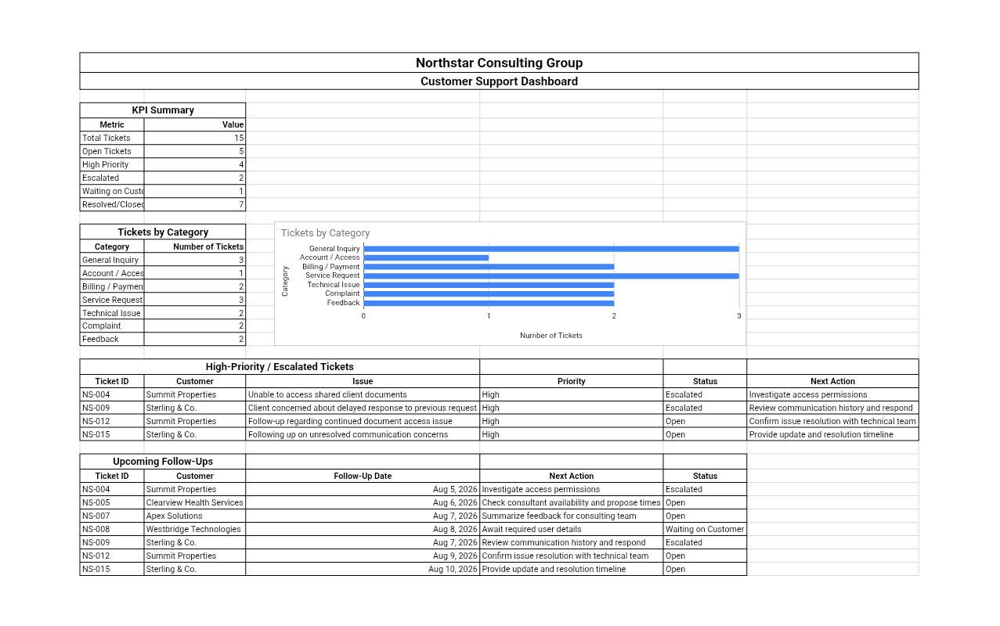

Customer Support
Customer Support Management System
A structured customer support workflow covering ticket tracking, support priorities, knowledge-base organization, response templates and escalation processes.

Overview
This project is an independent portfolio demonstration created to demonstrate practical business workflows. It presents a structured customer support system that organizes ticket tracking, priorities, knowledge-base content, response templates and escalation processes.
Business Scenario
Customer support work involves a steady flow of requests, questions and issues. Without structure, tickets get lost, responses are inconsistent and escalation paths are unclear. This demonstration shows how a practical support system can bring order to that workflow.
Objective
To build a clear, repeatable customer support workflow that organizes incoming tickets by priority, maintains a structured knowledge base, provides consistent response templates and defines a clear escalation process.
What Was Built
A set of structured documents and tracking sheets covering: a ticket tracking sheet with priority levels, a knowledge-base organization structure, a response template library, an escalation process document and a support reporting view.
Workflow / Process
Incoming support requests are logged and categorized by priority. Common questions are matched to knowledge-base articles and response templates. Tickets that cannot be resolved at the first level are escalated through a defined process with clear ownership.
Follow-ups are tracked until resolution, and reporting summarizes open tickets, resolved items and recurring topics.
Tools Used
Google Sheets for ticket tracking and reporting, Google Docs for templates and documentation, and Google Drive for organized file storage.
Skills Demonstrated
Key Takeaways
- Ticket tracking with clear priorities reduces missed and delayed responses.
- A organized knowledge base makes common questions faster to answer.
- Reusable response templates improve consistency and save time.
- A defined escalation process ensures complex issues reach the right person.